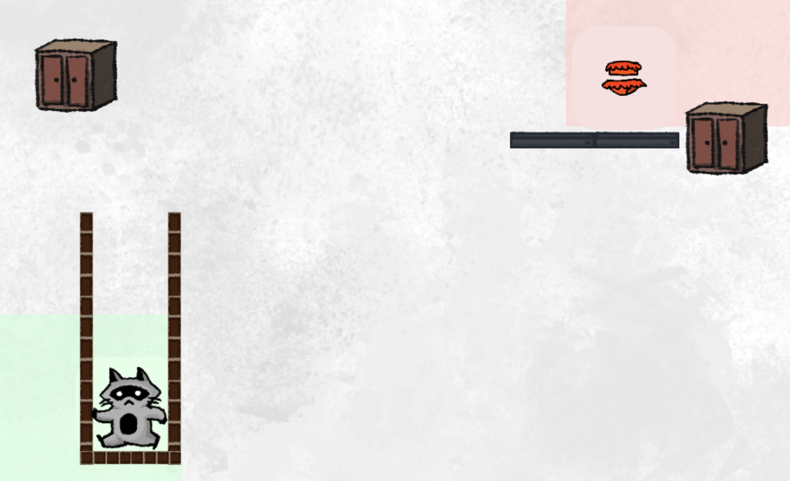
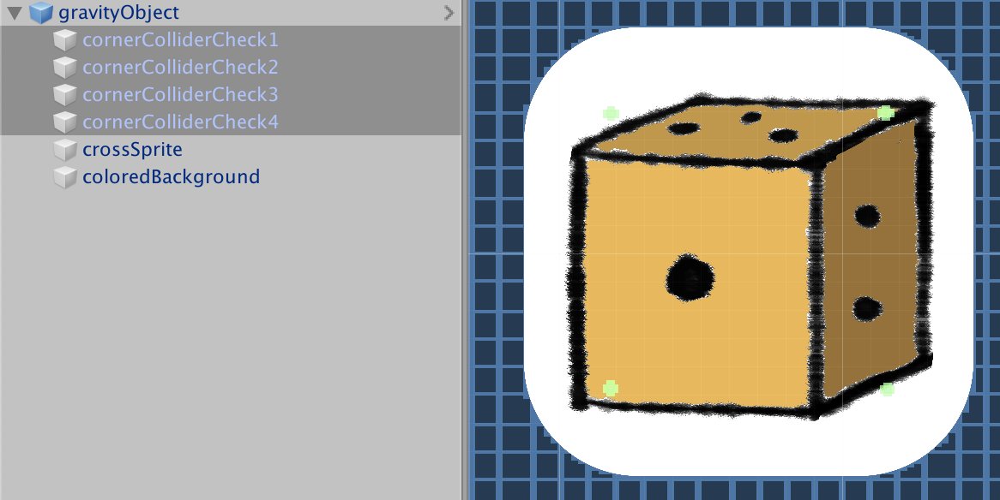
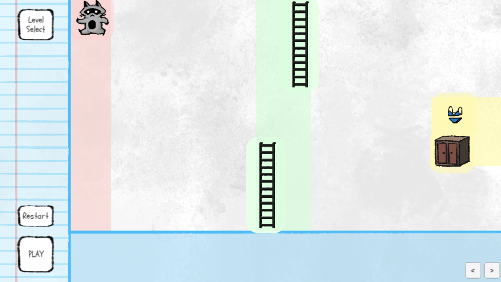

Description
Finished Raccoon Bikini Game is a Unity puzzle game built by a team of artists and programmers for the Ludamdare 45 Game Jam. The jam lasted for 72 hours and 2611 games were submitted. The theme was “Start with nothing”.
Racoon? Bikini??
We came up with the idea by a cascade of memes and inside jokes from past projects that eventually merged and became something that had possibility for gameplay dynamics between mechanics. When we step back and took a good look, we thought to ourselves, how did it go so wrong in such a short time.
To match the theme, we started brainstorming gameplay mechanics that starts with nothing that players can build upon. We landed on the idea for building a level out of nothing, with constraints that makes both building the level itself and controlling the character to clear it engaging. Why Bikini and Racoon? The answer to that might be found at the end of the internet.


This level features a the racoon came with a deep well that player cannot climb out of.
How does the Racoon works?
An inventory of objects is provided to players including platforms, bikinis and the racoon. Players are able to drag the objects onto the play area to composite the level. Player can play and test out their composition anytime and retry infinitely.
The puzzle aspect comes from the constraints on how players can use the objects. Some objects are wrapped around a colour outline, which indicates that the objects can only be dragged onto area on the screen with the same colour. The coloured area, objects provided and their colour is predefined and allow us to define variety of creative puzzles.
Another mechanic is that objects sometimes comes in bundle of multiple objects. Players do not have the power to change the layout, and are only able to drag the entire cluster into the play area. This allow us to create level with forced structure that lead players to solve the puzzle in a specific way.

Surprise Challenge to get to the bikini
My main role is to implement interative features such as drag and drop for items, coloured area boundary detection.
One of the challenge came surprising when I was implementing the coloured area boundary detection. Unity has provided easy detection methods for when two objects touches each other. But it does not support detection for when two a sprite is fully covered in another. I had to research and came up with the solution.
The surprise comes from how there is not many solution suggested in this topic. I then turn to my teammates for help. We discussed a few possibilities, such as using Raycast, or SpriteRenderer.isVisible, but none of these solutions are able to achieve detection of sprite fully in range. Finally, we came up with a custom and not very efficient way to solve it.
We built 4 small Trigger Collider to the 4 corners of the item If the 4 corner colliders are all within the area of the coloured area, that indicates the object is fully covered.
Upon more research after the Jam, I found the bounds.extents field from colliders. It will provide us the width and height of the object. We would be able to perform simple checks with the width and height information, which would be more efficient than having 4 small colliders on each object.
Level Design
Other than programming, I am also dedicated to making interesting level. A 72 hours jam left us very little time left to design levels after the code implementation. Despite the time constraint, we managed to build 20 levels and ordered them in difficult.
Raccoon’s life is difficulty
The 20 levels includes tutorial levels, which gradually teaches game mechanics to players one at a time. We intend to improve the player experience of the game by providing a smooth difficulty ramp. After the tutorial levels, the player should have learned all the techniques required to clear the game. For example, we teach players that colour outlined objects can only be dragged onto coloured area by a simple level, while another level teaches player that a floating platform’s motion can be reversed if it hits a box.

Challenging Level..?
After the game is submitted, I regret how one of my level turned out. Level 13 provides players a few simple elements to place, and tight coloured area that constraints their position.
The solution is shown in the second image. In order to pass the level, both of the ladders are required to be placed at the very edge of the coloured area, players also have to hold down their right arrow key when starting the game to maximize their speed to the right in order for the raccoon to reach the ladder.
The solution requires precise and careful control of the character and placement of the ladder, which derived from the rest of the levels in game, where mainly prerequisite planning and intelligent interaction between elements are craved from players. The level is the only action packed level that becomes out of place.
If I have the chance and time, I would definitely have discarded the level and rethink the aspect I should challenge the players with.

Raccoon learned his lesson
I have gathered experience in collaborating with other programmers under tight time constraints. The ability to clearly articulate ideas is as crucial as building clean code that smoothly merges with features built by others.
I have also learned my lesson in design that is applicable to many media. It is important to understand what the end-users expect from our product. In this case, a smart puzzle instead of an action-game level is desired.